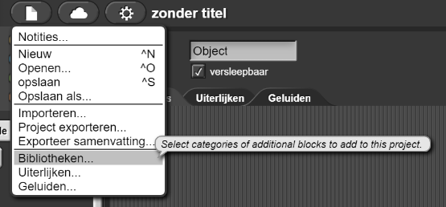
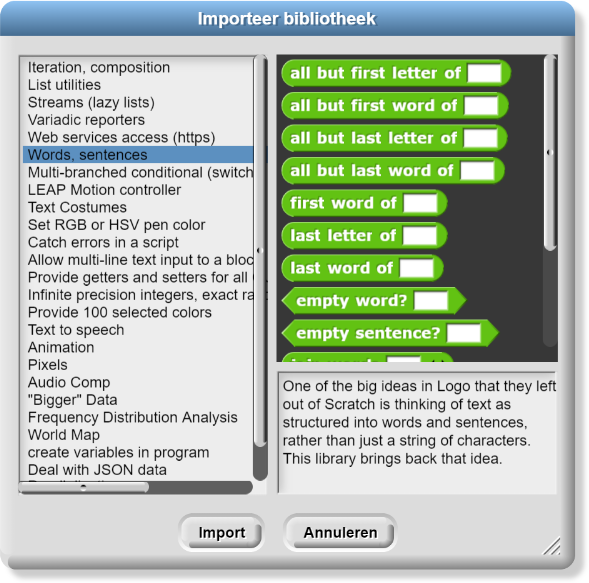
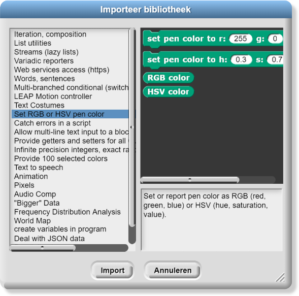

Stel dat een applicatieprogrammeur een klein plaatje wil kunnen verplaatsen in een scherm dat ook andere afbeeldingen bevat. In Snap ! is dat ingebouwd: importeer een afbeelding als een kostuum die aan een sprite kan worden bevestigd en verplaats de afbeelding vervolgens door de sprite te verplaatsen. Met de sprite-abstractie kan een programmeur een afbeelding (het kostuum van de sprite) over andere afbeeldingen (de achtergrond van het speelveld, pennen en andere kostuums van sprites) verplaatsen zonder na te denken over alle details. Niet alle talen hebben de sprite-abstractie.
Andere veel voorkomende taken, zoals weten waar de muisaanwijzer zich bevindt, met grote aantallen rekenen of geluid afspelen, zijn ook vrij complex. Als applicatieprogrammeurs met al deze details in elk programma te maken zouden krijgen, zou er nooit software worden ontwikkeld. En omdat veel talen en toepassingen dezelfde taken nodig hebben, is het verspillend om code voor iedere taak bij elk programma opnieuw te schrijven. Dus schrijven programmeurs bibliotheken voor andere programmeurs om te gebruiken.
Een bibliotheek is een stuk code geschreven door een andere programmeur die je in jouw code kunt importeren zonder dat je details hoeft te weten over hoe de functies in de bibliotheek precies werken.
Een applicatieprogramma-interface (API) is de documentatie waarin staat wat de gebruiker van een bibliotheek moet weten over de inhoud: een beschrijving van het doel en de in- en uitvoer, maar niet de precieze werking. Met een API kunnen twee softwarecomponenten communiceren.
Je hebt bibliotheken gebruikt in Snap ! , ze bevatten blokken (procedures) die nuttige
abstractie bieden.
Snap! heeft bibliotheken voor veel dingen, bijvoorbeeld om bij bepaalde stukken van woorden te
komen en om de penkleur verschillende kleurcoderingen te laten gebruiken.



Wanneer mensen vergelijken wat verschillende programmeertalen kunnen doen, vergelijken ze eigenlijk bibliotheken. Mensen denken bijvoorbeeld dat ze van JavaScript houden omdat ze het kunnen gebruiken om webpagina's te programmeren, maar dat is geen eigenschap van JavaScript. Het is eigenlijk een webpagina bibliotheek ingebouwd in de browser waarmee je webpagina's kunt programmeren.